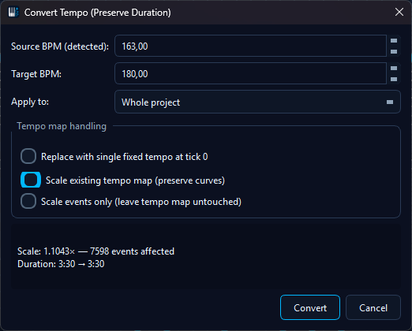

Convert Tempo, Preserve Duration
Convert Tempo, Preserve Duration
The Convert Tempo, Preserve Duration tool re-targets a MIDI file (or a part of it) from one musical tempo to another without changing how long it takes to play back in real time. A 90 BPM vocal recording dropped into a 180 BPM project will line up bar-for-bar with the project grid and sound exactly the same speed it always did.
💡 Find it in: Tools → Tempo Tools → Convert Tempo, Preserve Duration…, or right-click a track / channel / selection and pick the same entry from the context menu.


The dialog: detected source tempo, target tempo, the scope picker, the three tempo-map modes and the live preview above the Convert button.
Why this exists
Two existing operations almost solve the problem but neither is enough on its own:
- Change BPM - flips the tempo meta but leaves note ticks alone, so the music plays back at a different speed and a different musical length.
- Scale notes - multiplies tick positions but leaves the tempo alone, so the music takes longer / shorter in real time and re-aligns to different bars.
Combining the two by hand is fiddly and easy to get wrong. Convert Tempo, Preserve Duration does both in one atomic, undoable operation and shows the projected duration delta before you commit.
The math - one formula, one example
Worked example, 90 BPM → 180 BPM (scale = 2.0):
| Quantity | Before | After |
|---|---|---|
| Note start tick | 480 | 960 |
| Note length (ticks) | 240 | 480 |
| Tempo meta | 90 BPM | 180 BPM |
| Real-time start | 0.333 s | 0.333 s |
| Real-time length | 0.167 s | 0.167 s |
Real playback duration is preserved; the file now lives in the host project's 180 BPM grid. Because every tick is rounded to a whole number, a round trip 90 → 180 → 90 can land up to one tick per event away from where it started. That is inaudible, but if you need the result exactly on the grid afterwards, quantize the converted events.
The dialog - field by field
| Field | What it does |
|---|---|
| Source BPM (detected) | Filled in from the file's earliest tempo event. Override it for material whose real tempo differs from what the file claims - the conversion always works from the number in this box. |
| Target BPM | Where you want to end up. It starts at the detected tempo, so the dialog opens on "nothing to do" until you change it. |
| Apply to | Whole project, Selected tracks, Selected channels or Selected events. The entry point decides which tracks, channels or events those are, and a coloured line under the picker names them ("Pre-filled tracks: 2", "Pre-filled with 128 selected event(s)."). To convert one track, open the dialog from that track - see Entry points. |
| Tempo map handling |
Replace with single fixed tempo at tick 0 (default), Scale existing tempo map
(preserve curves), or Scale events only (leave tempo map untouched). The default
does what most people mean by "convert tempo": rewrite the tempo to the target BPM and
scale every event tick by target/source so the real-time playback length stays
identical. See the modes section for the other two.
|
| Preview box | The dark box above the buttons recomputes after every change - without touching the file - and reports the scale factor, how many events would be affected, and the playback duration before and after. When the chosen mode rewrites the tempo map it also reports how many tempo events go and how many arrive. A warning line appears below it when there is something to warn about. |
| Convert | The only button that changes anything. Everything above it is a projection; Cancel leaves the file untouched. |
Tempo handling modes
| Mode | Behaviour | Use when |
|---|---|---|
| Replace with single fixed tempo at tick 0 (default - "just convert the BPM") |
All TempoChange events are removed and a single tempo at target_bpm
is inserted at tick 0. Event ticks scale by target/source so note lengths
grow / shrink to match. The piece sounds exactly the same speed as before but now
lives at the new BPM. |
The common case: re-target a clip from one tempo to another. 90 BPM vocal → 180 BPM project, etc. |
| Scale existing tempo map (preserve curves) | The tempo events move with the music and their BPM values are scaled along, so a written-in tempo curve keeps its shape at the new musical-tick rate. | Pieces with a written-in ritardando / accelerando that you want to retime without flattening the tempo changes. |
| Scale events only (leave tempo map untouched) | The tempo map is left exactly as it was. Only the event ticks in scope are rescaled, so the material really does take longer or shorter in real time. | You want a half-time / double-time correction inside a project that already runs at the correct musical tempo - and it is the mode every partial scope uses. |
⚠ Partial scopes use Scale events only. The tempo map belongs to the whole file, not to a track or a channel, so changing it from a partial scope would retime everything outside the scope. As soon as Apply to is anything other than Whole project, the dialog therefore selects Scale events only and greys the other two modes out, with that reason printed under them. Set the scope back to Whole project and all three are available again, with your previous choice restored.
Entry points
- Tools menu → Tempo Tools → Convert Tempo, Preserve Duration… - opens the dialog with scope set to Whole project.
- Tracks panel - right-click a track row, pick Convert Tempo, Preserve Duration…. The dialog opens on Selected tracks with the right-clicked track pre-filled.
- Channels panel - same idea: right-click a channel, and the dialog opens on Selected channels with that channel pre-filled.
- Matrix / piano roll - with at least one event selected, the right-click menu adds the same entry, scoped to Selected events. The note ends travel along automatically, so converted notes keep their lengths.
All four open the same dialog; only the scope it starts on differs. Tempo numbers and the tempo-map mode are yours to change before you press Convert - which tracks, channels or events are in scope is decided by the entry point you used, so pick the one that matches what you want to convert.
Safety guarantees
- Single undo step. The whole conversion runs inside one
Protocol::startNewAction("Convert tempo (preserve duration): X→Y BPM")block - one Ctrl+Z restores every event tick and the tempo map exactly. - Note ends move with their notes. Every event in scope is rescaled, note ends included - and a conversion started from a selection carries each selected note's end along even though a selection never contains note ends itself. No note is ever left hanging.
- Tick-domain math. Scaling happens on absolute ticks; the MIDI writer works out the delta times on save, so the file stays a perfectly ordinary MIDI file.
- Lyrics, markers and bar lines keep their place. In a whole-project conversion the meta events are scaled together with the notes, so words stay under their syllables and time signatures stay on the same musical position. A narrower scope moves exactly what is in scope and nothing else.
- FFXIV drum playback stays correct. The program change that gives each percussion track its sound is sent live with every note, so it still matches after a conversion.
Warnings the dialog raises
| Situation | What you'll see |
|---|---|
| Source and target BPM are the same | A warning line under the preview: "Source and target BPM are identical - nothing to convert." Convert then closes the dialog without changing anything. |
| The scope holds no events | The preview reads 0 events affected. That is the sign you opened the dialog from the wrong place - close it and start from the track, channel or selection you mean. |
| Several tempo events + Replace mode | The preview adds a Tempo events line showing how many are removed and how many are inserted, so you can see the tempo curve being collapsed to one value before you commit. |
| No file open | The preview shows the reason instead of numbers, and converting does nothing. |
Letting the AI do it
The same conversion is available to MidiPilot as the
convert_tempo_preserve_duration tool, with the same four scopes - the whole file,
given tracks, given channels, or your current selection - and the same tempo-map modes. It follows
the dry-run rule: the agent first reports what the conversion would change, waits for your
confirmation, and only then runs it for real, as one undoable step. Ask for it in plain words
("this was recorded at 90 BPM, fit it to the project's 180") and check the summary before you say
yes.
Thin Tempo Map
The second tool in Tempo Tools answers a different question: not "which tempo is this at", but "how many tempo events does it take to say so". A tempo ramp drawn in a DAW is exported as a long chain of tiny tempo steps - one every few ticks, thousands of them over a song. Every one of them has to be read whenever the editor works out where a note sits in time, and anything else that plays the file back reads them too. Thin Tempo Map keeps the events that carry the timing and drops the rest.
💡 Find it in: Tools → Tempo Tools → Thin Tempo Map…, by right-clicking the measure ruler above the piano roll, or as the repair button on the Tempo map finding in the playability check.
tempo-thin_dialog.png
What "keeping the timing" means
The tempo map is what turns a tick position into a point in time. Thinning replaces it with a shorter map that has to stay inside a corridor around the original: you choose how many milliseconds any point of the piece may end up away from where it was, and the tool keeps exactly the events it needs to honour that - checked at every original tempo event and at the end of the file, so the error cannot creep up over the length of the song. The default corridor is 2 ms, far below anything you can hear. Notes, lyrics and markers are never touched; only tempo events are removed, and every event that survives keeps the tempo value it already had, so no number in the file is ever a computed average.
The first tempo event of the file always survives - it is the anchor everything else is measured from. At the other end of the dial, a corridor of 0 ms still has work to do: a run of tempo events that all say the same thing can be collapsed without moving anything at all, so setting the box to zero removes exactly the events whose removal changes no timing whatsoever.
The shift is counted from the file as you opened it
The millisecond figure is a budget for the whole document, not a fresh allowance for each run. The tool remembers the tempo map it was first asked about in this session and always measures against that one, so "the music moves at most 2 ms" stays true however often you run it:
- Running it again at the same setting reproduces the same decision and removes nothing, so reaching for it whenever a file feels heavy costs nothing.
- Running it again at a larger setting thins further, still inside the new corridor counted from the file as opened - not on top of what the first run spent.
- Running it at a smaller setting than a previous run reports the distance the piece has actually travelled and says plainly that the earlier thinning would have to be undone to get back inside the tighter corridor.
When the tempo map is changed by something else - a tempo event added or edited, a tempo conversion - the remembered map no longer describes the document, so the tool starts counting from the map as it stands now. Saving and reopening the file does the same, because the saved file is the original from that point on.
The dialog
The dialog opens with a sentence naming how many tempo events the file carries right now - the number the preview is worth comparing against - and one setting underneath it.
| Element | What it does |
|---|---|
| Allowed timing shift | The corridor, in milliseconds, adjusted in half-millisecond steps. Smaller keeps more tempo events and moves the music less; larger keeps fewer. |
| Preview line | Rewrites itself as you turn the dial: how many of the events would be kept, how many removed, the largest timing shift anywhere in the piece and the shift at the end of the file. Nothing has changed at this point. When the setting keeps everything it says so instead - every tempo event is carrying part of the timing. |
| Thin | Applies it as a single undoable step named after the before and after counts, so one Ctrl+Z brings the full map back. The status bar then repeats what happened. |
Two extra lines appear under the preview when they apply: one whenever the map has already been thinned in this session, naming how far from the file as opened it already sits and reminding you that the figures count from there; and one in bold when the piece is already further away than the setting asks for.
Letting the AI do it
MidiPilot has the same tool as thin_tempo_map, with the corridor as its only real
setting. It follows the dry-run rule: the agent reports how many events it would remove and how
far the timing would move, waits for your confirmation, and only then applies it as one undoable
step. The figures it quotes are the same cumulative ones the dialog shows, counted from the file
as opened. "This file drags, can you clean up the tempo map" is enough to start it.